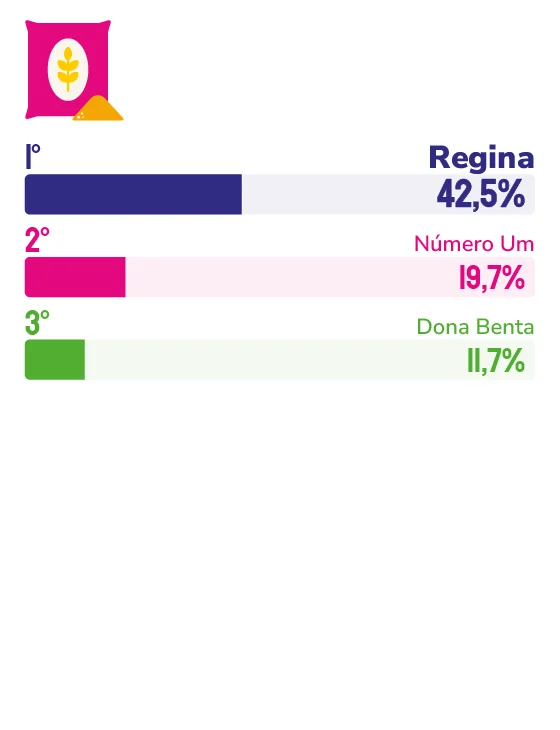

FARINHA DE TRIGO e MISTURA PARA BOLO
Presente nas receitas de família há gerações, Regina une qualidade industrial e memória afetiva para se manter na primeira lembrança dos capixabas em Farinha de Trigo e Mistura para Bolo.
Há quem associe o cheiro de pão quentinho saindo do forno a uma receita específica, passada de geração em geração. Para boa parte dos capixabas, essa receita carrega o nome Regina, uma presença que se repete também nos bolos de aniversário, nas mesas de domingo e nas pequenas comemorações do dia a dia. Esse tipo de lembrança, ligada a momentos afetivos e não apenas ao produto em si, explica por que a marca ocupa simultaneamente o primeiro lugar em duas categorias na pesquisa de lembrança espontânea entre os moradores da Grande Vitória: Farinha de Trigo e Mistura para Bolo.
“Ocupamos esse espaço na memória e no coração das pessoas porque construímos um vínculo afetivo e uma relação de confiança”, explica a vice-presidente da Buaiz Alimentos, Eduarda Buaiz. Segundo ela, ao escolher Regina, o consumidor sabe que está levando para casa um produto de qualidade, resultado de um processo industrial moderno e de investimento contínuo em melhoria. “A farinha que a avó usou para preparar um pão quentinho, a mistura para bolo do lanche do filho, o bolo que a mãe fazia… tudo isso contribuiu para a construção de uma relação afetiva”, descreve.
Esse reconhecimento consecutivo – 15 anos de liderança em Farinha de Trigo e 14 anos em Misturas para Bolo – é tratado pela executiva como resultado de um trabalho diário, e não de um único fator isolado. “É motivo de gratidão, orgulho e responsabilidade”, afirma Eduarda. “Gratidão às famílias que abrem suas casas para a Regina, orgulho da nossa equipe que coloca cuidado em cada detalhe e responsabilidade de seguir honrando essa confiança, inovando sem perder a essência que nos trouxe até aqui.”
Manter essa posição em duas categorias diferentes exigiu decisões estratégicas claras ao longo da trajetória da marca. Um dos marcos mais importantes, segundo Eduarda, foi justamente a expansão da Regina para além da farinha de trigo, com o lançamento da linha de Misturas para Bolo.
“Quando passamos a assinar também as misturas para bolo, entramos ainda mais nas celebrações, nos aniversários, nas festas em família e nas comemorações do dia a dia”, relembra. A modernização do parque industrial e a diversificação do portfólio – com farinhas específicas, como Tradicional, Gourmet, Integral, Pizza e Pastel, e diferentes linhas de mistura para bolo – vieram na sequência, mostrando ao consumidor que tradição e inovação caminham juntas dentro da empresa.
Essa combinação também orienta a relação da marca com quem produz e quem consome no dia a dia. “Estamos nas cozinhas de milhares de famílias, nas padarias, no food service, sempre com equipes próximas, ouvindo quem produz e quem consome”, diz Eduarda. Para ela, essa escuta constante é o que orienta melhorias de produto, formatos, embalagens e comunicação. “Cuidamos da marca como um patrimônio afetivo, ou seja, tratamos Regina como um legado de família para famílias.”
Olhando para o consumidor capixaba de hoje, a vice-presidente da Buaiz Alimentos identifica um público mais exigente e informado, que busca qualidade com consistência e praticidade sem perder o sabor de casa. “Investimos continuamente em pesquisa de mercado, em análise de tendências de alimentação e em escuta do canal profissional, que também influencia muito o que chega à mesa do consumidor final”, afirma. Esse acompanhamento orienta tanto o desenvolvimento de novos produtos quanto os investimentos em modernização, automação e sustentabilidade.
Em 2026, a marca também celebra um capítulo simbólico de sua história: os 70 anos da Farinha de Trigo Regina, marcados por uma campanha com ativações, forte presença no ponto de venda e a promoção “70 Mil é Massa Demais”, válida para Espírito Santo, Rio de Janeiro e Minas Gerais. Mas, segundo Eduarda, o olhar da empresa está voltado para frente, para um futuro mais digital, mais ágil e mais sustentável. Esse é o caminho que ela projeta para os próximos 15 anos, sem abrir mão do que considera inegociável.

Eduarda Buaiz
Vice-presidente da Buaiz Alimentos
“Não abriremos mão da excelência e da qualidade dos produtos; do respeito e da confiança nas relações com consumidores, clientes, parceiros e colaboradores; da experiência positiva do cliente, e da inovação.”
46
